{kind=link}
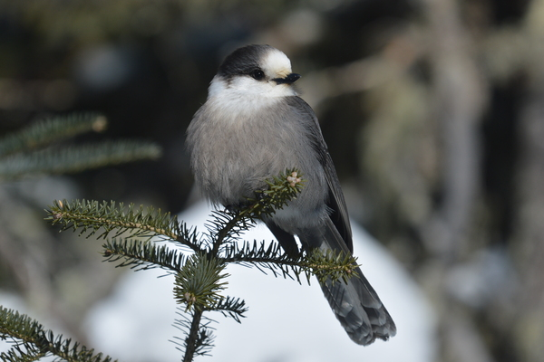
Mésangeai du Canada
Observation hivernale et photographie de terrain.
Un profil de biologiste quantitatif, ancré dans l'ornithologie, la conservation et les données ouvertes.
Candidate au doctorat en biologie, Université de Sherbrooke, Integrative Lab. Projet: changements de biodiversité, extinction et colonisation des espèces.
Maîtrise en sciences forestières, Université Laval. Projet: colonisation du territoire québécois par la Grue du Canada dans un contexte de changements globaux.
Baccalauréat en biologie environnementale, Universitat Autònoma de Barcelona, avec échange international à l'Université Laval.
Professionnelle de recherche, Biodiversité Québec, Université Laval et MELCCFP, hiver 2025 - présent. Traitement, structuration et analyse de données écologiques complexes dans le cadre du projet Biodiversité Québec.
Chargée de projet et biologiste, Explos-Nature, été-automne 2023 et été-automne 2024. Analyses d'images radar, mouvements d'oiseaux, données d'espèces, cartographie et rédaction de rapports.
Biologiste, Service canadien de la faune, ECCC, hiver 2024. Développement d'une application Shiny pour automatiser des rapports, analyses de jeux de données multiples et production de cartes de répartition.
Analyste statistique, projets avec ECCC, consultants et ministères, 2021-2023. Packages R, analyses spatiales et temporelles, modélisation d'occupation, cartes et rapports reproductibles.
Professionnelle de recherche, Université de Sherbrooke, programme ATLAS, automne 2020. Standardisation de bases de données écologiques et programmation en R et SQL.
lm, glm), modèles mixtes et hiérarchiques (lmer, glmer, glmmTMB), sélection de modèles, validation, prédiction et analyses de puissance.PCA, RDA, NMDS), analyses spatiales et temporelles, données de suivi de biodiversité et analyses de données radar.Vice-présidente du Club des ornithologues de Québec, depuis mars 2026. Je contribue notamment aux communications, à la vie associative et à la mise en valeur de l'ornithologie auprès de la communauté.
Dans mon doctorat à l'Université de Sherbrooke, j'étudie les changements de biodiversité, l'extinction locale et la colonisation des espèces dans les écosystèmes du Québec. Mon travail combine information spatiale, effort d'échantillonnage et méthodes bayésiennes pour mieux interpréter les données écologiques. Les fonctions de ce travail se retrouvent dans le dépôt SpaColExt.
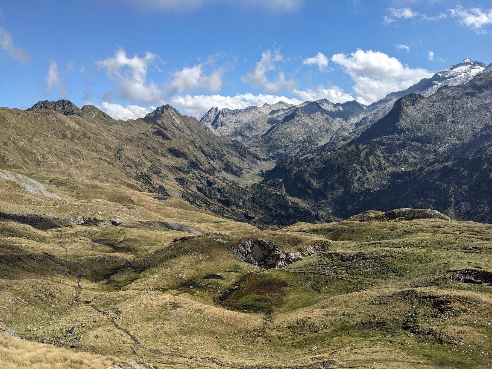
Les oiseaux sont au coeur de plusieurs de mes projets: Grue du Canada, Tétras du Canada, Hibou des marais et Nyctale de Tengmalm... Je participe aussi à eBird depuis 2017, avec plus de 1600 listes d'observations au niveau mondial et jusqu'à 274 espèces recensées au Québec et sur iNaturalist avec plus de 1000 observations. Pour moi, la science citoyenne est à la fois une façon d'observer le vivant, de contribuer à la recherche et de garder les pieds dans le terrain.
J'aime transformer des jeux de données complexes en analyses claires: fichiers radar, sons, bases de données d'observations, cartes de répartition, rapports automatisés et applications Shiny. Mes outils de tous les jours incluent R, QGIS, Rmarkdown, Quarto, Git/GitHub et les workflows reproductibles.
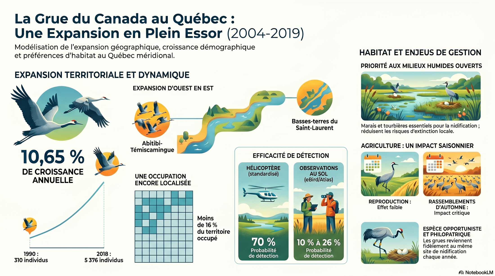
Quelques images qui accompagnent mon intérêt pour l'observation naturaliste, la photographie de faune et flore, et la communication scientifique.

Observation hivernale et photographie de terrain.
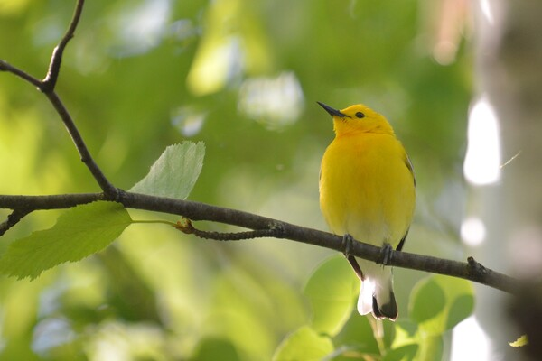
Une rencontre lumineuse dans le feuillage.
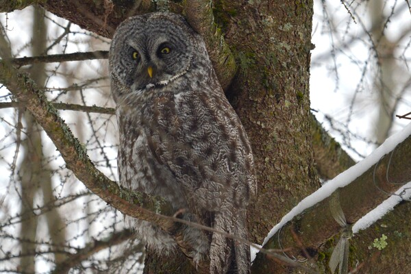
Observer les oiseaux, même lorsqu'ils se fondent dans le paysage.
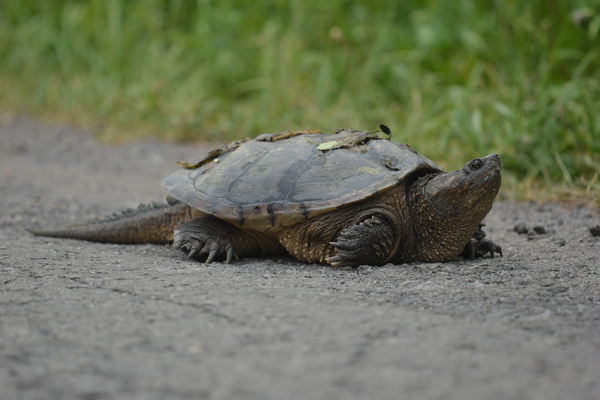
Un moment de terrain au ras du sol.
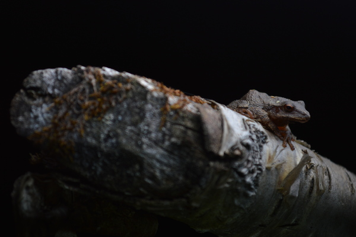
Une petite scène naturaliste, entre détail et surprise.
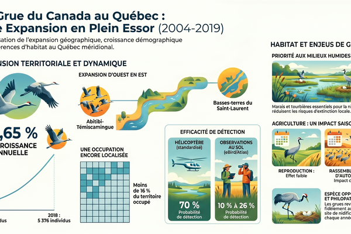
Une vulgarisation visuelle issue de mes travaux de maîtrise.
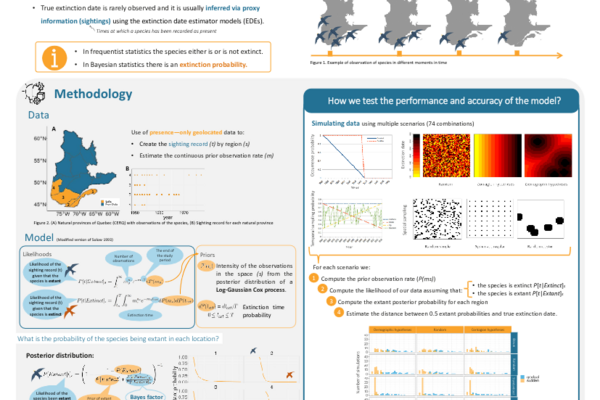
Communication scientifique autour de mon projet doctoral.
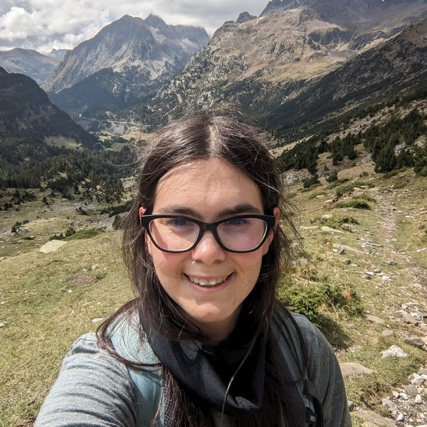
Paysages de montagne et longues journées dehors.
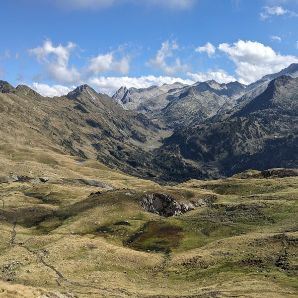
Un rappel que le terrain commence souvent par l'envie d'aller voir.
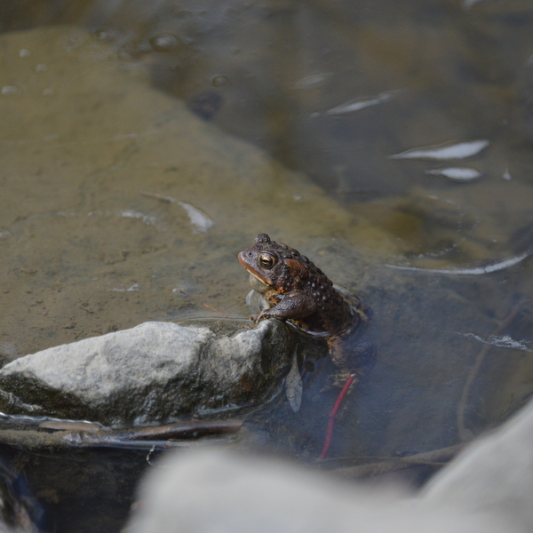
Observer les détails, même quand ils se tiennent au bord du cadre.
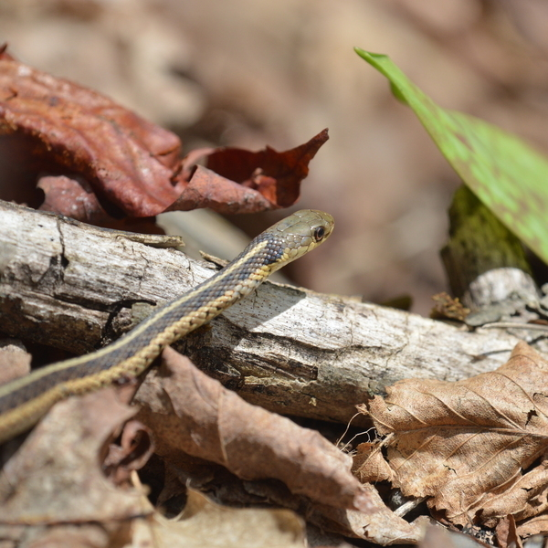
La biodiversité de proximité, discrète et fascinante.
Quelques fils qui nourrissent mon quotidien, au-delà de la recherche.
Marcher longtemps, lire un paysage et chercher ce qui bouge autour du sentier: le terrain reste l'endroit où mes idées respirent le mieux.
Photographier les espèces rencontrées sur le terrain me permet de prolonger l'observation, de documenter les détails et de garder une trace sensible du vivant.
Changer d'échelle, de langue et d'horizon: voyager nourrit autant ma curiosité naturaliste que mon envie de comprendre les lieux.
J'aime les jeux qui font réfléchir à plusieurs: stratégie, coopération, règles élégantes et bons moments autour d'une table.
Découvrir une ville ou une culture par ce qu'on cuisine, ce qu'on partage et ce qu'on prend le temps de goûter.
Lire et peindre me donnent un autre rythme: observer autrement, laisser mûrir les idées, puis revenir au monde avec plus d'attention.
{kind=link}
{kind=link}
{kind=link}
{kind=link}
{kind=link}
{kind=link}
{kind=link}
{kind=link}
{kind=link}
{kind=link}